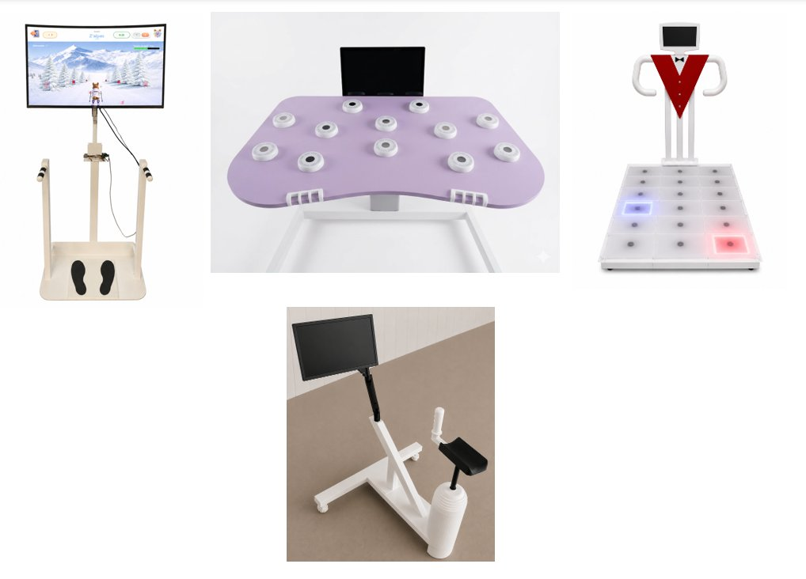
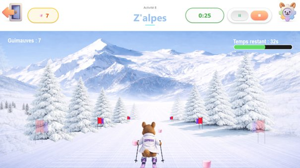

Stage R&D chez NBA TechnoR&D internship at NBA Techno
Développement embarqué de dispositifs interactifs de rééducation : un plateau de balance et une piste de danse lumineuse, du firmware jusqu'aux jeux pour les patients.
Embedded development of interactive rehabilitation devices: a balance board and a light-up dance floor, from firmware all the way to games for patients.

Ma missionMy assignment
J'ai travaillé sur deux produits de la gamme : le plateau de balance instrumenté et la piste de danse.
I worked on two products in the range: the instrumented balance board and the dance floor.
Le plateau de balanceThe balance board
J'ai créé un jeu de ski dans lequel le personnage Zapinou descend une piste en suivant les déplacements du patient sur le plateau. Pour cela, j'ai :
I created a skiing game in which the Zapinou character goes down a slope following the patient's movements on the board. To do this, I:
- analysé le schéma et le circuit imprimé sous KiCad
- compris le fonctionnement des capteurs (jauges de contrainte) et de la communication série (UART)
- étudié le firmware sous STM32CubeIDE pour en extraire le format de la trame
- codé une interface Python pour visualiser en temps réel les données de la carte
- programmé un serious game en Python et QML sur VS Code qui exploite les données envoyées par la carte.
- analysed the schematic and the PCB in KiCad
- learned how the sensors (strain gauges) and the serial communication (UART) work
- studied the firmware in STM32CubeIDE to work out the frame format
- coded a Python interface to display the board's data in real time
- programmed a serious game in Python and QML that uses the data sent by the board

La piste de danseThe dance floor
Le patient doit poser le pied sur les îlots lumineux qui s'allument, ce qui fait travailler ses jambes. Pour cela, j'ai :
The patient has to step on the light-up pads as they turn on, which exercises their legs. To do this, I:
- analysé le schéma et le circuit imprimé sous KiCad (microcontrôleur PIC, liaison RS-485, capteurs capacitifs, LED adressables)
- vérifié le fonctionnement des capteurs capacitifs à l'oscilloscope
- programmé en C, sous MPLAB X IDE, le firmware des 7 cartes qui pilotent les LED et surveillent les capteurs
- conçu le protocole de communication maître/esclaves entre le PC et les cartes, et câblé le réseau RS-485
- intégré un jeu de réflexes côté PC, validé sous Windows puis porté sur Raspberry Pi
- analysed the schematic and the PCB in KiCad (PIC microcontroller, RS-485 link, capacitive sensors, addressable LEDs);
- checked how the capacitive sensors work on the oscilloscope;
- programmed in C, in MPLAB X IDE, the firmware for the 7 boards that drive the LEDs and monitor the sensors;
- designed the master/slave communication protocol between the PC and the boards, and wired the RS-485 network;
- integrated a reflex game on the PC side, validated on Windows then ported to Raspberry Pi.